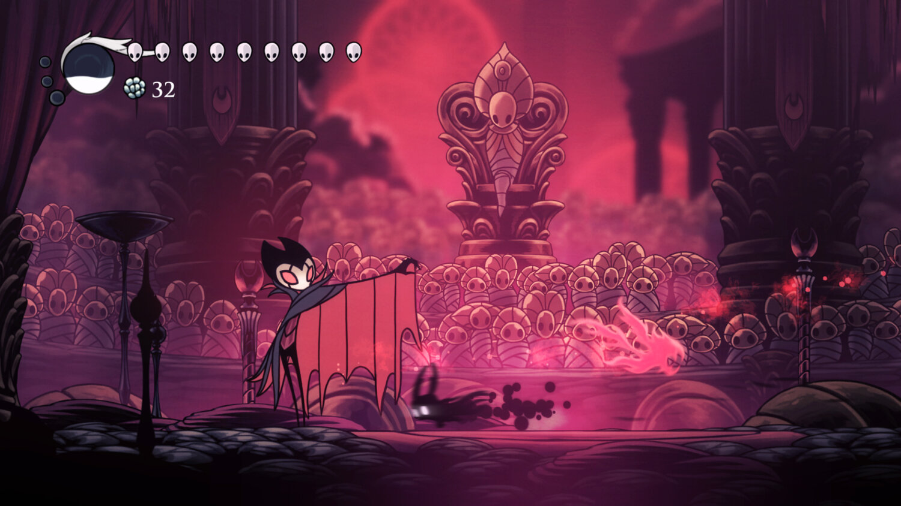
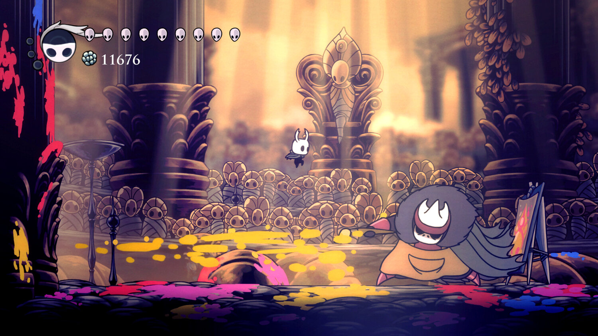

Explore Deep Into a Forgotten Kingdom
 Beneath the quiet, fading town of Dirtmouth lies a huge ancient
kingdom. Many explorers search this place for glory, riches or answers
to old secrets.
Beneath the quiet, fading town of Dirtmouth lies a huge ancient
kingdom. Many explorers search this place for glory, riches or answers
to old secrets.
You play as the mysterious knight, and you will explore the depths,
finding its mysteries and fighting its evils.
Survive Using Your Reflexes and Skills

Hollow Knight is a 2D action-adventure game, and a challenging one at that.
You will explore strange, great interconnected areas, encounter many friends and foes
and fight all kinds of creatures to figure out an ancient mystery,
all while becoming stronger and developing new abilities.
Evocative Hand-Drawn Art

The elegant, vivid 2D hand-drawn animation is what brings Hollow Knight to life.
Every place you go is amazingly strange, unique and detailed, with all kinds of creatures to meet,
some passive, some hostile. This is a world worth exploring, to take in the sights and find hidden wonders.